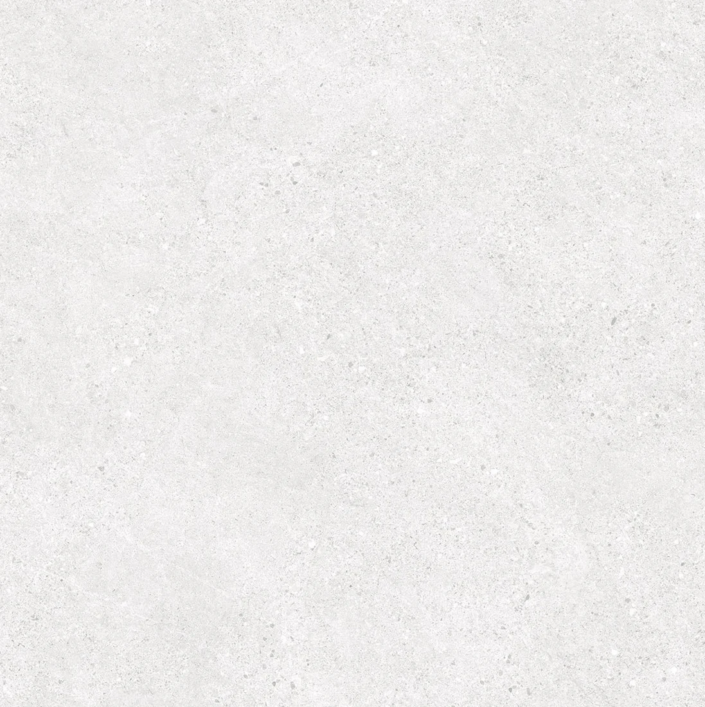
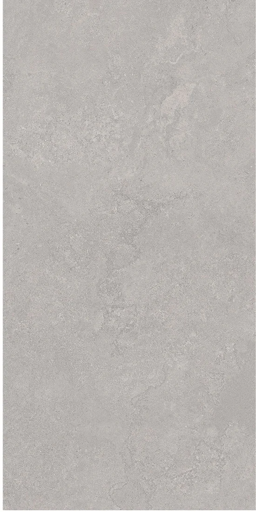
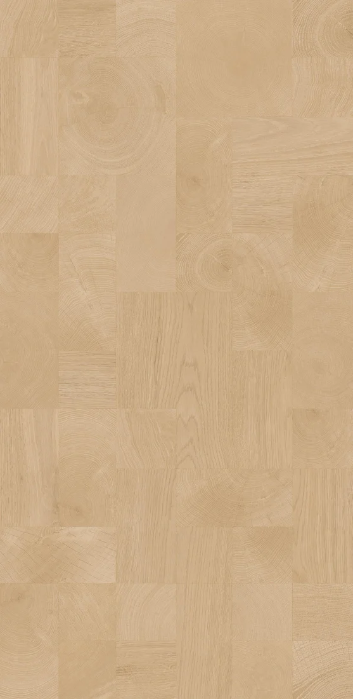
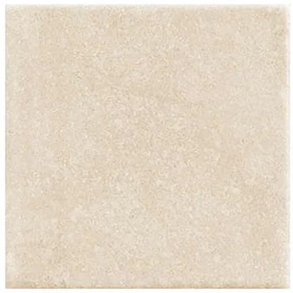
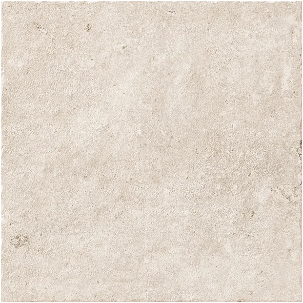
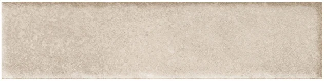
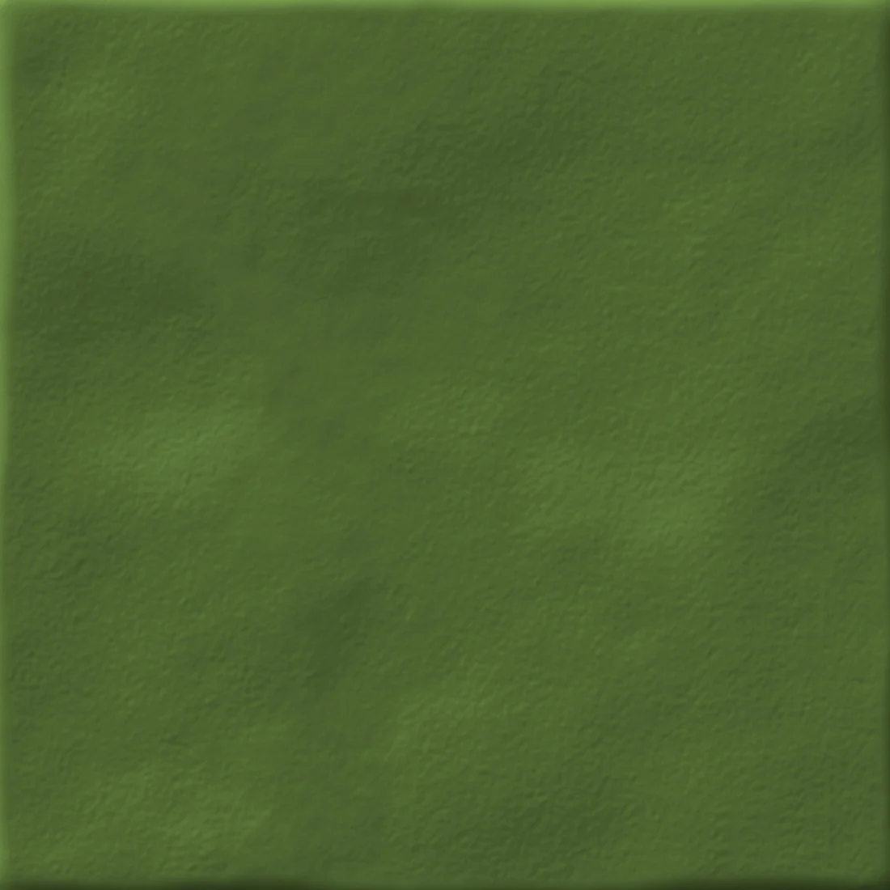
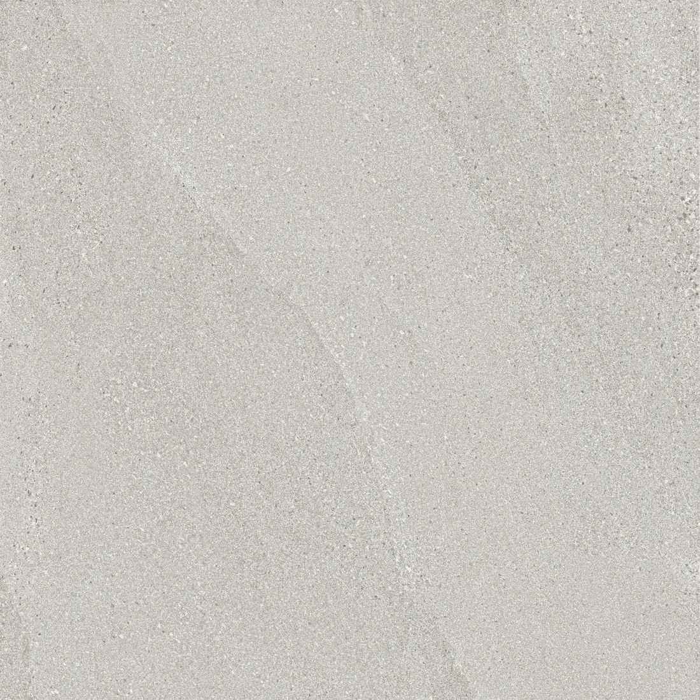
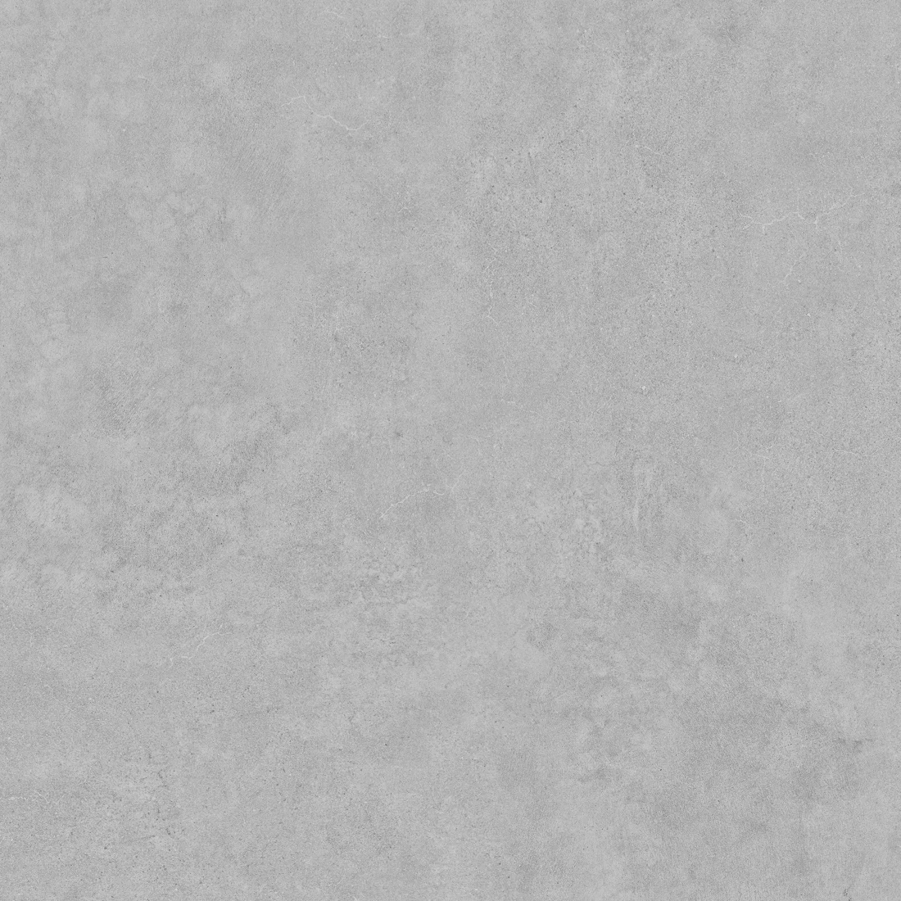

小火柴 / MATERIAL LIBRARY / 01—10
从一片瓷砖，
开始想象一个空间。
十款瓷砖的规格、颜色与单片素材。直接看、对照选，也可以把资料与原图交给 AI，继续比较、分析和构思。
获取选材素材读取完整产品资料按空间气质开始
十款产品 / 逐片查看
共 10 款

小火柴 莱姆石砖 奶白色
SAD2A600MI1
600*600 mm · 奶白色 · 哑光

小火柴 度假风石纹砖 灰色
SAD1A612MG2
600*1200 mm · 灰色 · 哑光

小火柴 长条木纹砖 浅木色
FAC3W218MC1
200*1800 mm · 浅木色 · 哑光

小火柴 通铺木纹砖 浅木色
FAF1W612MY2
600*1200 mm · 浅木色 · 哑光

小火柴 方形手工砖 米白色
FAL2K100MI1
100*100 mm · 米白色 · 哑光

小火柴 陶土仿古砖 暖米白色
FAL1A200MI1
200*200 mm · 暖米白色 · 哑光

小火柴 长条手工砖 暖米白
FAL3K520MI1
50*200 mm · 暖米白 · 哑光

小火柴 素色小方砖 草绿色
QAH4P100MN1
100*100 mm · 草绿色 · 哑光

小火柴 磨砂石纹砖 浅米灰色
FAE1A600MG1
600*600 mm · 浅米灰色 · 哑光

小火柴 清水砼水泥纹砖 灰色
FAE2C600MG1
600*600 mm · 灰色 · 哑光
让 AI 读资料，再谈搭配
把产品页或完整文字目录交给支持联网读取的 AI。需要做效果参考时，下载单片图并上传，通常比让 AI 读取远程图片链接更直接。不同 AI 的联网与图片功能各有差异。
图片为单片产品图，非实景效果图。颜色受屏幕与光线影响，请以实物为准。用途与风格为选材标签，具体施工适用性需核实。防滑、吸水率、耐磨及湿区适用检测资料暂未提供。